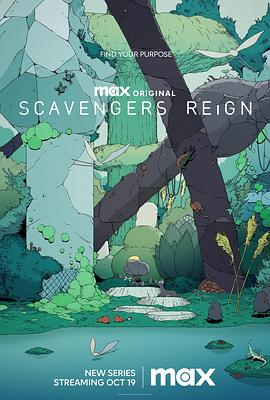
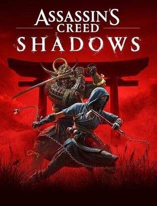
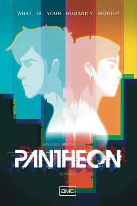
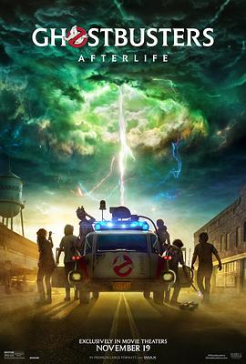
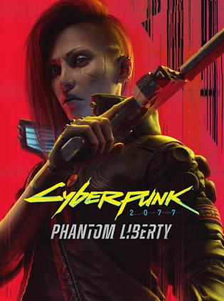

2023年10月
广播发布后不可编辑，所以每条都是那一刻的原话。
2023-10-29 21:29:17
在看 间谍过家家 第二季 / SPY×FAMILY Season 2
2023-10-29 21:27:39
 看过 关于我和鬼变成家人的那件事 / 關於我和鬼變成家人的那件事
看过 关于我和鬼变成家人的那件事 / 關於我和鬼變成家人的那件事
引用豆油的话：“比预想中差一些又比刚开始看好一些。” 以及 “这电影最厉害的地方是，最后直男没弯，而是变成了更好的直男”
2023-10-29 11:09:46

2023-10-29 06:03:20

以前一部不落地玩，近两部都提不起兴趣玩了。。。希望这一部可以有一些惊喜
2023-10-22 20:00:39

厚礼谢，激励我只身闯澳洲的电影要出续作了，电影院买爆
2023-10-22 13:19:59

2023-10-22 04:50:16
2023-10-20 20:15:06
想玩 漫威蜘蛛侠2 Marvel’s Spider-Man 2
倒是也没那么想玩，只是标记一下，毕竟1还没玩完
2023-10-20 20:12:56
想玩 超级马力欧兄弟 惊奇 スーパーマリオブラザーズ ワンダー
2023-10-19 19:48:32
 玩过 茧 COCOON
玩过 茧 COCOON
解谜游戏设计的极致！非常好玩（可惜不能打大boss）！ //错过首发血亏，原价买游戏 _(:з)∠)_ 但是还是要支持独立游戏
2023-10-15 19:21:08
读过 学生探索百科全书
父母买的这套书真是我小时候的精神食粮，翻了无数遍，比编程书还多。直接奠定了我对自然科学的好奇心，以及对于所以新鲜事物的接受能力。长大后才发现这本书尤其地小众，特别难找，以后书要当传家宝留着。
2023-10-14 14:21:17
在玩 茧 COCOON
错过首发血亏，原价买游戏 _(:з)∠)_ 但是还是要支持独立游戏
2023-10-13 20:11:23
引用豆油的话：“难得几乎全部是对白的影片让人看的这么过瘾！” 这样的剧情总是让我感动、羡慕，甚至有些向往。才发现和《情书》是同年的作品，真是一个好的年代啊。
2023-10-13 16:23:20
2023-10-13 16:23:10
2023-10-13 16:22:59
2023-10-12 22:03:09
看过 吹响悠风号 合奏比赛篇 / 特別編 響け！ユーフォニアム アンサンブルコンテスト
京阿尼yyds
2023-10-12 11:57:56
2023-10-10 17:14:22
想看 花月杀手 / Killers of the Flower Moon
2023-10-04 18:38:55

老片卖情怀，总体感觉挺平淡，有些搞笑的成分，但是不多。Phoebe我前半小时一直以为是男孩，结果后来说she才发现……看起来好像赫敏
2023-10-03 20:59:18
想看 封神第三部
2023-10-03 20:58:51
想看 三体II：黑暗森林（上）
2023-10-03 20:58:14
 想看 封神第二部：战火西岐
想看 封神第二部：战火西岐
一年一部效率可以啊，三体要是有这个效率就好了
2023-10-03 20:56:23

因为之前PS5的版本退了，但是存档当时还没有跨平台备份，所以GOG v2.0 重新开档，这次选了3年前没有选的女号，可以攻略judy了（然而要玩到DLC还有20小时的样子
2023-10-03 20:55:26
在看 海女 / あまちゃん
156 * 15 = 39 小时
2023-10-02 22:33:57
2023-10-02 18:42:03
看过 碟中谍7：致命清算 / Mission: Impossible – Dead Reckoning Part One
挪威特技果然精彩，原来是用来赶火车的。剧情很紧凑，反派AI的设定嘛倒是有点老套。看动作还是很过瘾的。
2023-10-02 18:39:24
看过 封神第一部：朝歌风云
从小就听说封神榜的大名，可惜以前的电视剧太老了，一直没有兴趣看掉，这次电影版真是太过瘾了，拍的很精彩。
2023-10-01 18:48:04
 看过 狙击手·白乌鸦 / Sniper. The White Raven
看过 狙击手·白乌鸦 / Sniper. The White Raven
最开始是在youtube shorts上看到新兵训练的那一段，教官在身边开枪，要求保持不动。然而剧情上还是平淡了些。
2023-10-01 14:58:49